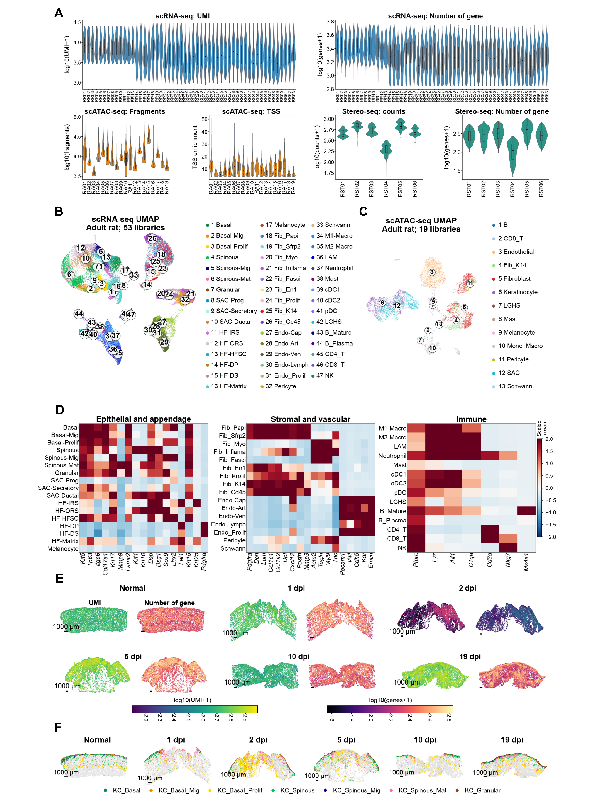

Registered adult-rat scRNA-seq, scATAC-seq and spatial resources, annotations and sample codebooks.
Executed supporting analyses and/or archived sources; see panel-specific status
Source data · Panel manifest · Execution report

| Panel | Description | Status |
|---|---|---|
| S6A | (A) Quality-control distributions for 53 scRNA-seq samples, 19 scATAC-seq samples, and six adult rat Stereo-seq sections. Each modality retains its own measurement unit. | not_run |
| S6B | (B) RNA embedding of 450,282 retained cells with 47 annotated states. | not_run |
| S6C | (C) Chromatin-accessibility embedding of 28,618 retained nuclei with 13 broad classes. | not_run |
| S6D | (D) Marker heatmap supporting rat cell-state annotation; expression scaling follows the displayed key. | not_run |
| S6E | (E) Spatial transcript and gene-count maps for six adult rat sections. Scale bars, 1,000 micrometers. | not_run |
| S6F | (F) Spatial distributions of seven keratinocyte states in these six sections. | not_run |